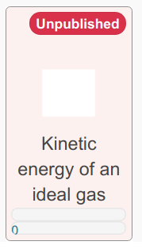

Getting Started¶
Known bugs¶
Note
Thumbnails sometimes do not show in student images
Password reset from canvas fails since it demands old password
Login for the first time¶
Login to to the server with your email and password which is probably your email.
If this is your fist login, you will prompted to change your password.
Create the first exercise¶
After login , several buttons are visible on the toolbar.
{kind=link}
The
ShowAllbutton toggles the display of unpublished exercises.Press the
ShowAllbutton and now the circle icon to the left is now filled in. Below the toolbar, you will now now see a symbol along withExercise name.
{kind=link}
Use your mouse to click on
Exercise name.Now you can enter title of the new exercise. E.g.
Kinetic energy of an ideal gas.Hit the
Returnkey.
The new exercise will now be shown under the toolbar.
{kind=link}
Edit the exercise¶
Click the exercise and select the icon on the top left of the toolbar. This reveals a second toolbar:
{kind=link}
Click on the
LiveEditbutton.
You will now have a split screen with the formatted exercise on the left and the XML representation on the right.

Press the
Assetsbutton below the toolbar. The box expands to show the attachments for this exercise.
{kind=link}
Press the Camera icon () to upload a JPG or PNG file. Use a small file, a few 100Kb at most.
In the XML representation, change the value contained in the
<figure>tag to be the name of the file you uploaded.Press the
Savebutton on the XML representation panel. You will now see a thumbnail of the image along with the exersize.In the the XML, you can rename the exercise by changing the contents of the
<exercisnename>tag.
If you are impatient to improvise on the file by editing the XML, note the following basic points.
Delete any sections you want; make sure XML remains legal
You can try some standard HTML syntax. Remember though:
all tags must be closed.
not all HTML is implemented.
all text and HTML belongs inside the
<text>tags
The
<expression>tag contains the question’s correct answerAll variables in
<expression>must receive numerical assignments in the<global>tagAll question keys must be unique in the exercise
All choices keys must be unique in the multiple choice question.
Vimode is enabled if you chooseSwitch keymap default.The
<right>tag is used to right justify a figure on the page. Delete the entire line if you are not going to use a figure.Mathematical expressions are interpreted through KaTeX, which is a subset of LaTeX.
Save the exercise¶
Press
Savewhen there are no errors
Note
You will not be able to save if there are errors in the XML
Warning
In case you make a mess of the XML and can’t recover:
Press the button (reset), it is the blue button next to the
Savebutton in the editing boxStart over completely and reload the question
If the XML is really messed up , try
XML & assetsinstead ofLive Edit
Publish the exercise¶
Press
Optionsin the toolbar, which is next toLiveEditin the blue toolbar.Click on the
Publishedcheckbox to enable itPress the
Savebutton to publish the exercise
Publish the course¶
Ensure you are displaying the toolbar shows. If it’s not visible press the icon in the top left corner.
Press the
Coursebutton from the toolbarA new toolbar is now shown, from it press
OptionsChange the following settings:
In the Email reply to card, replace the email with yours
In the Owners card, select yourself and
superIn the Course name card, change the name of the course if you wish. It defaults to your CID.
In the Allow anonymous student card, check off
Allow anonymous studentif you want to permit anonymous logins. (If you want, you can disable this at a later time and remove anonymously registered students).
Press the
Savebutton when you’ve make all the changes to the course.You can now see what the course looks like for students by checking
Student view
More examples¶
To see some example questions and how they are formatted, you can log into https://examples.opentaproject.com. This site allows anonymous login.
If you wish to save your work, a self registration should be possible after a successful anonymous login.
Make sure the toolbar is visible by clicking icon at the top left.
See who has used your site¶
Click the Users icon () in the toolbar to see all the users in the course.
Note
Please don’t add or delete users until you know what you are doing.
Panic: Exercises are messed up¶
Warning
To recover from a broken state:
From the toolbar, press
Exercises -> Reload Exercisesand then thePerform reloadbutton.